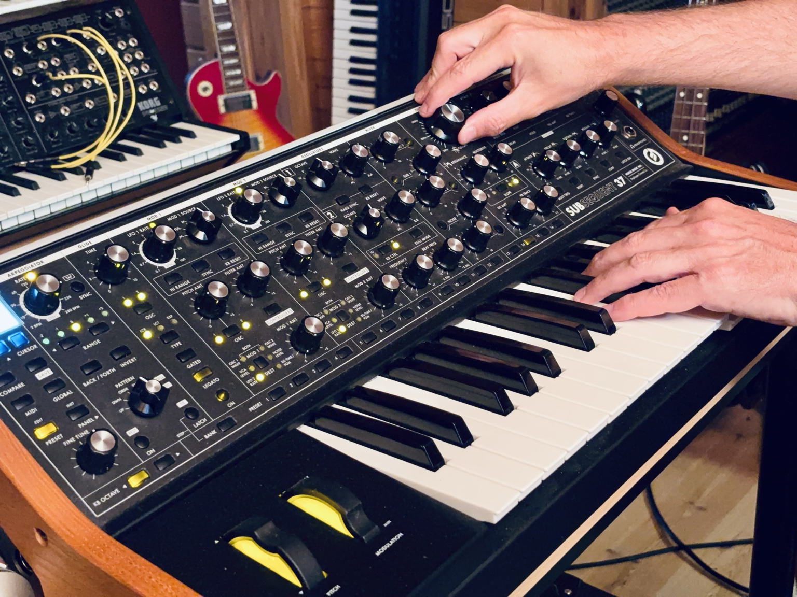
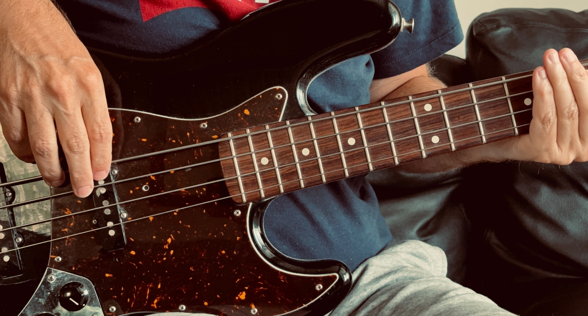
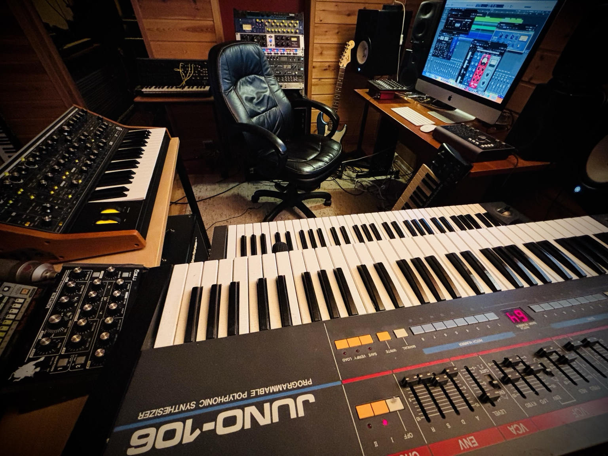

Tailored to your song
The production is shaped around your voice, references, musical direction and goals.
Online music production · Worldwide
Have a song idea, melody or demo? Send it for a free initial project review. Fredrikstad Studio can develop the music around your song and take the project through production, mixing and mastering – with direct, personal collaboration from Norway.
A direct studio relationship
Fredrikstad Studio is an independent production studio in Norway. Your project is developed around the song, the artist and the result you want to achieve, with direct collaboration from the first demo to the finished master.
The production is shaped around your voice, references, musical direction and goals.
Direct communication and a consistent creative process throughout the project.
You receive a clear recommendation, scope and price before the production starts.
Production, editing, mixing and mastering are considered as one complete musical result.
About Fredrikstad Studio
Fredrikstad Studio is a recording and music production studio in Norway, established in 2008. Led by producer, musician and songwriter Marius Sørlie Eriksen, the studio works with artists and songwriters both in Norway and internationally.
The studio works with artists and songwriters from early ideas and demos to complete, release-ready productions. Online projects are managed directly by Fredrikstad Studio, with Marius leading the creative and production process from the initial idea through to the finished release.
Depending on the project, the work can include composition, arrangement, instrumental production and recording, mixing and mastering – as well as practical guidance when recording your own vocals. Additional musicians, vocalists and creative collaborators can also be brought into the production when the project calls for it.
Every song is different. Rather than fitting projects into a fixed production formula, the aim is to understand the artist, the song and the direction you want to take – and build the production around that.
Online services
Choose the part your project needs, or send your demo and get a recommendation for the best way forward.
Song development, arrangement, instrumental production and recording built around your melody, lyrics, voice and direction.
Send your recorded tracks or finished mix and get a polished, balanced result prepared for release.
You record the vocal where you are. Fredrikstad Studio helps you prepare an effective recording setup and deliver usable files for the production.
For artists who want to develop more than one song – combining musical direction with strategy, identity and a clear next step.
Need additional vocals, musicians or single-instrument sessions? Selected projects can include trusted session collaborators from the Fredrikstad Studio network. It is also possible to book focused recording sessions for individual instruments such as piano, synth, bass or guitar — either as part of a larger production or as a clearly defined add-on. This is quoted separately based on the project, availability and recording requirements.

How it works
A simple remote workflow keeps the creative process clear while giving every project room to develop.
Share an MP3, a demo link, lyrics, melody or a short description of your project. The first project review is free.
We clarify what the song needs, the musical direction, what you will provide and what Fredrikstad Studio will handle. You receive a clear quote before work begins.
The instrumental and arrangement are developed. You record your vocal where you are, with practical guidance when needed, then send the final tracks.
The full song is brought together, mixed and mastered. You receive the final release-ready files digitally.
Pricing
Production and mixing projects vary in scope, so the price is based on what your song actually needs. You receive the scope and total price before the project starts.
Get a project quoteBased on composition, arrangement, production scope and the material you already have.
Based mainly on track count, editing needs and complexity.
Per song. Release-ready WAV master for digital distribution.

Release
For larger production projects, Fredrikstad Studio can also help get your music released on digital platforms such as Spotify, Apple Music, TIDAL, YouTube and TikTok – at no additional cost.
Payment & project start
After your demo has been reviewed, we agree on the scope, total price and timeline by email. Payment details are then provided directly before the project begins.
You know what is included, the price and the planned workflow before committing.
International payments can be arranged through PayPal. Card payment may also be available through PayPal depending on location and checkout options.
For larger productions, payment can be divided into agreed project stages when appropriate.
Artist Accelerator
Online development for artists who want a clearer identity, stronger musical direction and a practical plan for releases and growth.
Selected work
A selection of releases Fredrikstad Studio has contributed to through arrangement, songwriting, music production and mixing.Select a cover to listen on Spotify.
 Listen on Spotify
Listen on SpotifyAnnys
Arrangement & music production
 Listen on Spotify
Listen on SpotifyAndrea Joensen
Arrangement & music production
 Listen on Spotify
Listen on SpotifyNenroe
Arrangement & music production
 Listen on Spotify
Listen on SpotifyJackRil
Arrangement & music production
 Listen on Spotify
Listen on SpotifyBjörn Jager
Music production
 Listen on Spotify
Listen on SpotifyNatalie Gødeland
Songwriting & full music production
 Listen on Spotify
Listen on SpotifyGuro Susanna Myhre
Full music production
 Listen on Spotify
Listen on SpotifyLrHur
Recording & mixing – studio live
 Listen on Spotify
Listen on SpotifyAnne Straith
Songwriting & full music production
 Listen on Spotify
Listen on SpotifyCamilla Gulbrandsen
Songwriting & full music production
 Listen on Spotify
Listen on SpotifyAndrine Andersen
Melody & piano
 Listen on Spotify
Listen on SpotifySanglede
Songwriting, full music production & video
More productions


Before you start
You do not need to have every technical detail figured out before getting in touch. Start with the song and we can clarify the rest together.
A simple demo, MP3, private link, melody, lyrics or a short description is enough for the first review. It does not need to be professionally recorded.
No advanced studio is required, but you need a way to record your final vocal. Fredrikstad Studio can guide you on microphone placement, levels, room setup and file delivery.
Large audio files and stems are arranged after the first contact through an agreed file-transfer service. The contact form is mainly for your introduction and demo.
Production and mixing are quoted according to the actual scope of the song. You receive a clear total price and scope before the work begins.
Payment details are provided by email after the project has been agreed. International payment can be arranged through PayPal, with project stages available for larger productions when agreed.
If Fredrikstad Studio contributes original composition or songwriting, any relevant credits, ownership or splits are agreed as part of the project before release.
Start with your song
Your demo does not need to be finished. Send what you have – a rough recording, melody, song idea or existing production – and tell us what you want to achieve. You can include a demo link or upload an MP3 up to 10 MB.
Free initial project review. No commitment. You receive a recommendation for the next step, and if the project is a good fit, a clear quote before work starts.

Thank you! Your enquiry has been sent.